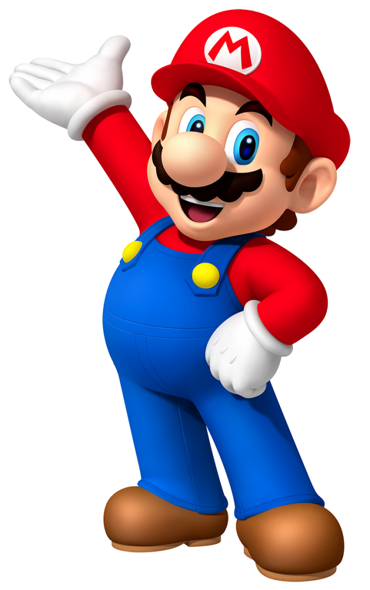

Guia para inciantes | Nintendo Switch
Esse site foi criado com a finalidade de ser um guia para novos proprietários do Nintendo Switch
Aqui você encontrará jogos das principais franquias Nintendo, assim como acessórios mais populares para o Nintendo Switch, e as duvidas mais frequêntes que podem surgir para os novos donos.
Aqui você encontrará jogos das principais franquias Nintendo, assim como acessórios mais populares para o Nintendo Switch, e as duvidas mais frequêntes que podem surgir para os novos donos.
